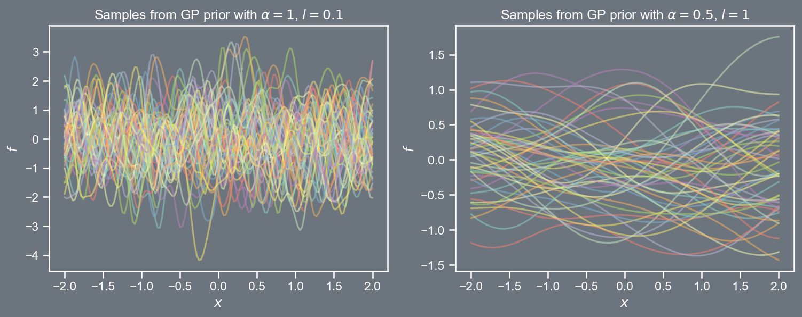

Gaussian process (GP) models assume that the vector of targets (e.g., \mathbf{t} ) come from a Gaussian distribution.
Rather than opting for a parametric form of the regression function, in GPs a mean vector and a covariance matrix are selected for this Gaussian.
Following Chapter 2 of Rasmussen and Williams, we shall begin with a noise-free case, followed by the noisy case.
Notionally, with GPs, we assume that our function is an infinite dimensional Gaussian! However, any subset of this infinite dimensional Gaussian is by definition also Gaussian!
An introduction to Gaussian processes
GP prior
Let \boldsymbol{x} \in \mathbb{R}^{d} denote a point in d-dimensional space, i.e., \boldsymbol{x} \in \mathcal{X}
As with any Gaussian, a GP is typically specified through its mean \mu\left( \mathbf{x} \right) and a two-point covariance function k \left( \boldsymbol{x}, \boldsymbol{x}' \right).
A popular choice for the mean function is \mu\left( \boldsymbol{x} \right) = 0 for all x \in \mathcal{X}.
Covariance functions are typically parameterized, and a popular choice is the radial basis function (also known as the squared exponential)
k \left( \boldsymbol{x}, \boldsymbol{x}' \right) = \alpha \; exp \left(- \frac{1}{2l^2} \left\Vert \boldsymbol{x} - \boldsymbol{x}' \right\Vert_{2}^{2} \right)
where l is the length scale and \alpha is the amplitude.
The function k is referred to as the kernel function.
Defining a grid of points \mathcal{X} \equiv \left[-2, 2 \right], and choosing values for \alpha and l, we can sample vectors \mathbf{t} from the GP prior \mathcal{N}\left(\mathbf{0}, \mathbf{C} \right), where \mathbf{C}_{ij} = k \left( \boldsymbol{x}_{i}, \boldsymbol{x}_{j} \right).

import pandas as pdimport numpy as npimport matplotlibimport matplotlib.pyplot as pltfrom scipy.stats import multivariate_normalfrom scipy.linalg import cholesky, solve_triangularimport seaborn as snssns.set(font_scale=1.0)sns.set_style("white")sns.set_style("ticks")palette = sns.color_palette('deep')plt.style.use('dark_background')def kernel(xa, xb, amp, ll): Xa, Xb = get_tiled(xa, xb)return amp**2* np.exp(-0.5*1./ll**2* (Xa - Xb)**2 )def get_tiled(xa, xb): m, n =len(xa), len(xb) xa, xb = xa.reshape(m,1) , xb.reshape(n,1) Xa = np.tile(xa, (1, n)) Xb = np.tile(xb.T, (m, 1))return Xa, XbX = np.linspace(-2, 2, 150)cov_1 = kernel(X, X, 1, 0.1) mu_1 = np.zeros((150,))prior_1 = multivariate_normal(mu_1, cov_1, allow_singular=True)cov_2 = kernel(X, X, 0.5, 1)mu_2 = np.zeros((150,))prior_2 = multivariate_normal(mu_2, cov_2, allow_singular=True)random_samples =50fig, ax = plt.subplots(2, figsize=(12,4))fig.patch.set_facecolor('#6C757D')ax[0].set_fc('#6C757D')plt.subplot(121)plt.plot(X, prior_1.rvs(random_samples).T, alpha=0.5)plt.title(r'Samples from GP prior with $\alpha=1$, $l=0.1$')plt.xlabel(r'$x$')plt.ylabel(r'$f$')#plt.ylabel(r'$\mathbf{w}_1$')fig.patch.set_facecolor('#6C757D')plt.subplot(122)plt.rcParams['axes.facecolor']='#6C757D'ax[1].set_facecolor('#6C757D')plt.plot(X, prior_2.rvs(random_samples).T, alpha=0.5)plt.title(r'Samples from GP prior with $\alpha=0.5$, $l=1$')plt.xlabel(r'$x$')plt.ylabel(r'$f$')plt.savefig('prior.png', dpi=150, bbox_inches='tight', facecolor="#6C757D")plt.close()
An introduction to Gaussian processes
Visualizing GP priors
The prior covariance function depended only on the difference between pairs of points, i.e., \left\Vert \boldsymbol{x} - \boldsymbol{x}' \right\Vert_{2}^{2}.
Such kernels are said to be stationary; an RBF kernel can be written as
We will consider the Olympic winning times dataset again, but this time assume there is no observational sensor noise.
The markers denote the training \left(x_i, t_i \right) pairs, while the dashed lines denote the locations are which we would like to make predictions. we will use the superscript \ast to denote points at which we would like to infer predictions
\underbrace{\mathbf{x}=\left[\begin{array}{c}
x_1 \\
x_2 \\
\vdots \\
x_N \\
\end{array}\right], \; \;\; \mathbf{t}=\left[\begin{array}{c}
t_1\\
t_2\\
\vdots \\
t_N \\
\end{array}\right]}_{\text{training}}, \; \; \; \; \; \; \underbrace{\mathbf{x}^{\ast}=\left[\begin{array}{c}
x_1^{\ast} \\
x_2^{\ast} \\
\vdots \\
x_L^{\ast} \\
\end{array}\right], \; \;\; \mathbf{t}^{\ast}=\left[\begin{array}{c}
t_1^{\ast}\\
t_2^{\ast}\\
\vdots \\
t_L^{\ast} \\
\end{array}\right]}_{\text{prediction}}
where N denotes the number of points in the training set, and L denotes the number of points in the prediction set.
It will be useful to combine the winning times (both training and prediction) in the same vector, i.e., \mathbf{\hat{t}} = \left[ \mathbf{t}, \mathbf{t}^{\ast} \right]^{T}.
An introduction to Gaussian processes
Noise-free regression
It will be useful to define three covariance matrices:
A covariance matrix, \mathbf{C} \in \mathbb{R}^{N\times N}, on the training data:
\mathbf{C}=\left[\begin{array}{ccc}
k\left(x_{1},x_{1}\right) & \ldots & k\left(x_{1},x_{N}\right)\\
\vdots & \ddots & \vdots\\
k\left(x_{N},x_{1}\right) & \cdots & k\left(x_{N},x_{N}\right)
\end{array}\right]
A covariance matrix, \mathbf{C}^{\ast} \in \mathbb{R}^{L\times L}, on the prediction (or test) data:
\mathbf{C}^{\ast}=\left[\begin{array}{ccc}
k\left(x_{1}^{\ast},x_{1}^{\ast}\right) & \ldots & k\left(x_{1}^{\ast},x_{L}^{\ast}\right)\\
\vdots & \ddots & \vdots\\
k\left(x_{L}^{\ast},x_{1}^{\ast}\right) & \cdots & k\left(x_{L}^{\ast},x_{L}^{\ast}\right)
\end{array}\right]
A cross-covariance matrix, \mathbf{R} \in \mathbb{R}^{N \times L} on the training and testing data:
\mathbf{R} = \left[\begin{array}{ccc}
k\left(x_{1},x_{1}^{\ast}\right) & \ldots & k\left(x_{1},x_{L}^{\ast}\right)\\
\vdots & \ddots & \vdots\\
k\left(x_{N},x_{1}^{\ast}\right) & \cdots & k\left(x_{N},x_{L}^{\ast}\right)
\end{array}\right]
An introduction to Gaussian processes
Noise-free regression
Assuming a zero mean, the GP prior over \hat{\mathbf{t}} is given by
p \left( \mathbf{\hat{t}} \right) = \mathcal{N} \left( \mathbf{0}, \left[\begin{array}{cc}
\mathbf{C} & \mathbf{R} \\
\mathbf{R}^{T} & \mathbf{C}^{\ast}
\end{array}\right] \right)
This distribution is the complete definition of our model. It tells us how the function values at the training and prediction points co-vary.
Making predictions amounts to manipulating this distribution to give a distribution over the function values at the prediction points conditioned on the observed training data, i.e., p \left( \mathbf{t}^{\ast} | \mathbf{t} \right)
From our prior foray into Gaussian conditionals, we recognize this to be
\begin{aligned}
p \left( \mathbf{t}^{\ast} | \mathbf{t} \right) & = \mathcal{N}\left( \boldsymbol{\mu}^{\ast}, \boldsymbol{\Sigma}^{\ast} \right), \; \; \; \; \text{where} \\
\boldsymbol{\mu}^{\ast} = \mathbf{R}^{T} \mathbf{C}^{-1} \mathbf{t}, \; \; & \; \; \boldsymbol{\Sigma}^{\ast} = \mathbf{C}^{\ast} - \mathbf{R}^{T} \mathbf{C}^{-1} \mathbf{R}
\end{aligned}